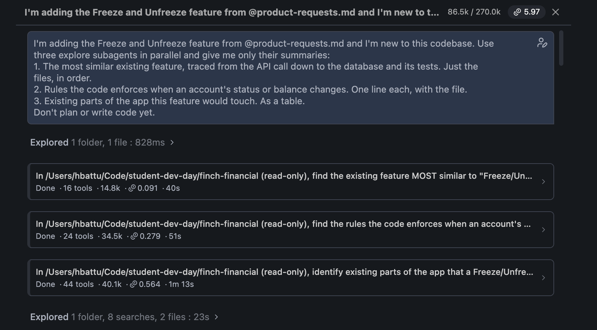
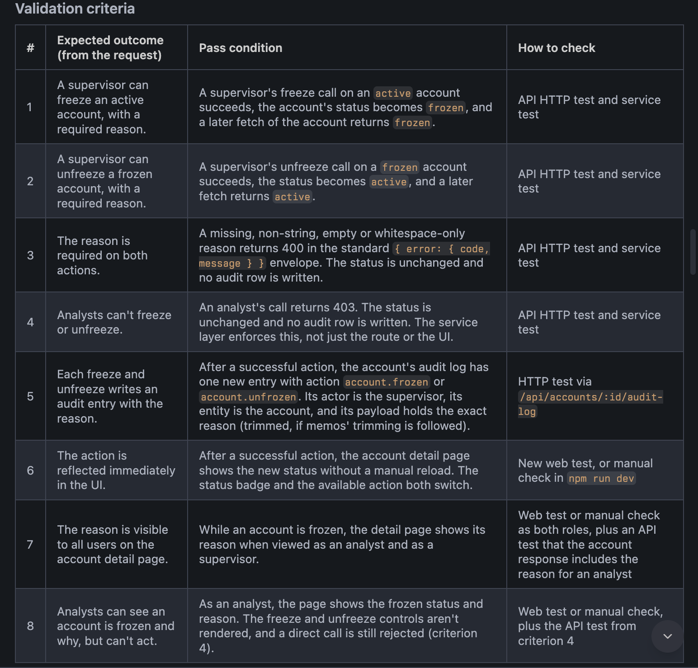
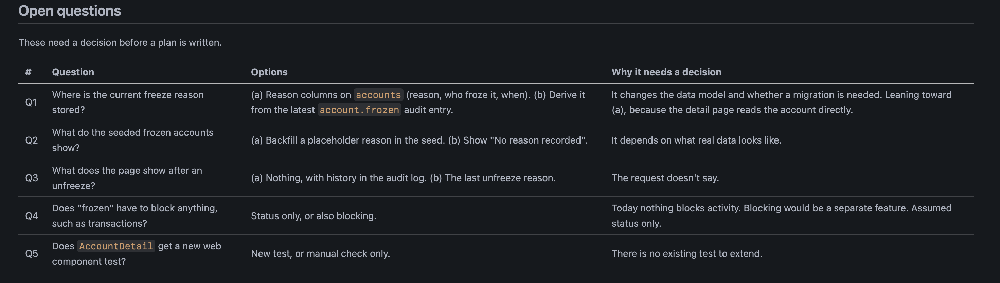
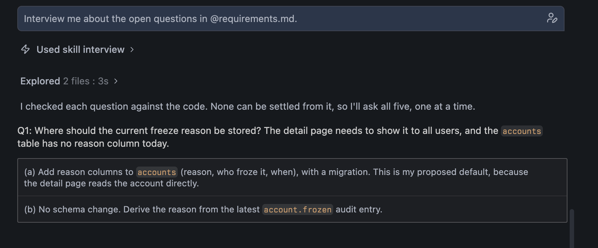
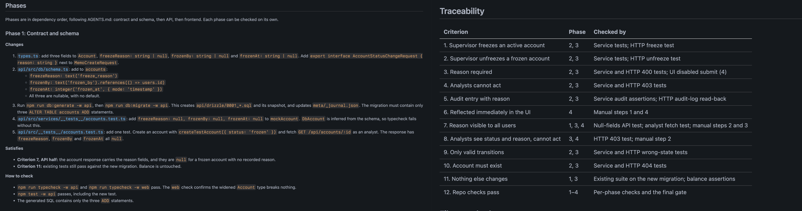

Module 1: Requirements Gathering and Spec Creation¶
The Codebase¶
Finch Financial is an internal operations console for a fictional neobank. The app is already running with the following functionality built:
- Sign in via email and password (all users share the password
Password123!) - Browse and filter customer accounts by status and name
- Search and filter transactions across all accounts
- View an account's detail page with transactions, memos, and audit log
- RBAC: analysts see active and frozen accounts. Supervisors can also see closed accounts. Only supervisors can add memos.
Your Task¶
The workshop builds the Freeze and Unfreeze product request in product-requests.md:
Product request
Freeze and unfreeze customer accounts when suspicious activity is detected.
An ops analyst notices Northgate Properties just sent a $280,000 wire to Cayman Holdings Ltd, with no prior history of transfers anywhere near that size. They can't freeze the account themselves (that requires a supervisor), so they flag it to their supervisor, who logs in and freezes the account with a reason.
Modules 2 and 3 build and review this feature, so everyone works on the same one. The file also holds a second request, flagging suspicious transactions with a supervisor resolution queue, for running the whole loop again on your own after the workshop.
This module takes a product request to a spec in one session. The input is the product request. From it you build a working knowledge of the codebase and the requirements of the feature, and from those you write the spec: the implementation plan. Two halves: understand the ground your feature lands on, then decide and write.
Human ownership is high here by design. You're the arbiter of the design decisions, so that you understand what you're shipping and the comprehension debt stays low. The agent explores, drafts, and asks. You decide.
Stay in Ask mode while you explore (the agent can read the repo but not change it). Switch to Plan mode when it's time to write (it can edit files but not execute anything).
Everything in a grey code block is pasted to Bob verbatim. The Expect and Notice notes under each prompt describe what a good run looks like, so you can tell when you're on track.
Before you start
- Bob is open on
~/finch-financialinside WSL (see Prework step 6). - Mode selector set to Ask. Permissions dropdown: leave Read on and everything else off for this module. You want to see the approval cards.
- Open
AGENTS.mdand skim it. Bob loads it on every conversation. It's where the repo's conventions live, which is why the prompts below can stay short.
Part A: Understand (Ask mode)¶
Ask mode can read and spawn read-only subagents. It cannot edit files or run commands.
1. Map the territory with subagents¶
I'm adding the Freeze and Unfreeze feature from @product-requests.md and I'm new to this codebase. Use three explore subagents in parallel and give me only their summaries:
1. The most similar existing feature, traced from the API call down to the database and its tests. Just the files, in order.
2. Rules the code enforces when an account's status or balance changes. One line each, with the file.
3. Existing parts of the app this feature would touch. As a table.
Don't plan or write code yet.

Expect. Bob reads the product request itself, then asks to spawn three explore subagents. Approve each. Three cards appear and run for a minute or so. Then three summaries land in the chat:
- Account memos named as the closest feature, with its files listed in order from the shared types through the web client, the route, the service, the audit helper, the repositories, the schema and the tests. That list is the recipe you'll copy.
- Rules as one-liners with file references, usually grouped. Somewhere in it is the fact that matters most: nothing in the codebase changes an account's status or balance today, so you're adding the first transition, not extending one.
- A table of areas to touch with a reason for each. Expect a few you wouldn't have guessed: the seed data already has frozen accounts, and their reasons currently live in memos. The activity feed already knows how to render a reason. The audit labels need new entries.
Exact lengths and wording vary from run to run.
You don't need to read every rule
Skim the group headings. The detail is there for when a later step cites it, not for you to absorb now.
Why three subagents. This is where context engineering starts, so it's worth understanding what's happening.
- The context window is the agent's working memory. It's finite, and it's shared by everything in the conversation.
- Everything Bob reads stays. A file opened in turn one is still there in turn twenty, competing with the spec you're trying to write for the agent's attention.
- Exploring a codebase means opening twenty files, most of which you'll never need again.
So the reading happens somewhere else:
| Main conversation | Explore subagent | |
|---|---|---|
| Starts with | your whole session so far | an empty context and one question |
| Reads | the summaries | twenty files |
| Keeps | the summaries | nothing, discarded when done |
That is context engineering: deciding what gets to be in the agent's memory, and keeping the rest out. The three questions are independent, so they run in parallel instead of one after another.
Why these three questions. They're the three kinds of requirement, and each is asked for in the shape the next steps can use directly:
| Question | Kind of requirement | Comes back as |
|---|---|---|
| 1. Most similar feature | the precedent: what to copy | a file list, in order |
| 2. Rules enforced | the constraints: what must stay true | one-liners, each with its file |
| 3. Parts it would touch | the integration surface: what must change | a table |
Notice.
- The context counter in the task header. Add up the tokens on the three cards. Compare to what the main conversation is using. The difference is reading that never entered your context.
- How Bob characterizes the sibling, something like "supervisor-only write, audited." That phrase is the architecture lesson. Freeze is the same shape with a status change added.
- Any line reporting an absence. Absences tell you what you're adding from scratch.
2. Define validation criteria¶
What does this repo already give me to verify a change against? Then turn the expected outcomes in the product request into validation criteria, one per outcome, each with a pass condition.

Expect. Two parts.
- What exists: the test commands, the fixtures, and the nearest test file to copy, plus anything about the test setup that would trip you up. Shape varies.
- Criteria: one row per outcome in the request, each with a pass condition you could hand to a test: "returns success, and a following GET shows
status: 'frozen'."
Bob will often add a note on what it inferred rather than read in the request. Those become assumptions in requirements.md, and the interview in step 5 asks you to confirm them.
Read the pass conditions, not the tool table
The commands are reference. The pass conditions are what you're checking: could a test assert this? If a row says "works correctly," send it back.
Why ask what exists first. Requirements without testable criteria are wishes. Grounding them in the repo means:
- pass conditions name real commands and fixtures, not a test strategy the agent invented
- gaps in coverage surface now, not in Module 2
Why "one per outcome, each with a pass condition." Without it the agent tends to produce one criterion per test case instead of one per outcome. Tying the count to the request's outcomes keeps the list the same size as the request and traceable back to it.
Notice.
- Anything in part 1 flagged as a gotcha. Those are the things that would have bitten you mid-implementation.
- Any assumptions the agent declares. It's telling you what it decided for you.
3. Surface open questions¶
Expect. Two lists.
- Needs your input: a handful of questions, each with the options and usually a lean. Every one should change the data model or what users see. If one doesn't, it belongs in the second list.
- Defaults to veto: what the agent decided on its own by following the existing pattern, stated so you can overrule it. Bob will often include this. If it doesn't, the same list shows up in
requirements.mdin step 4.
Why ask at all. Some things the agent can't deduce from the code, and shouldn't. The ambiguous decisions are yours to make. This is a human ownership point: the feature's design choices stay with you.
Why a separate prompt. The real questions come from combining the three summaries: a fact from one set against a fact from another. Only the main conversation holds all three summaries, so only it can ask this. Folded into the fan-out, it would land at the bottom of a long response.
Why "that you can't settle from the code alone." AGENTS.md tells Bob to ask only when a decision changes scope, user-visible behavior or the data model, and default the rest. This phrasing invokes that rule, so you get the few decisions that are yours instead of a long list the memo code already answers.
Notice.
- The second list exists at all. The agent is separating decisions that are yours from decisions it can make by precedent, which is the distinction the interview runs on.
- The lean on each question. Take its word on the order. The answers are yours.
Part B: Decide and write (Plan mode)¶
Switch the mode selector to Plan. Plan mode can write files but still cannot run commands.
4. Write requirements.md¶
Write a `requirements.md` from this conversation, using the task and the validation criteria we just defined, the relevant files, and the open questions we had defined. Output a requirements artifact only. No plan or code yet.

Expect. A short chat summary and a new file. Open the file. Whatever its exact sections, it should carry everything the conversation produced:
- the task and scope
- the validation criteria, numbered
- the open questions, each with options, a lean, and no decision yet
- the relevant files and how the change will be verified
Bob may also tell you which parts of the file it verified itself and which it's carrying over from the subagents. That caveat is in the file too.
Read the open questions, skip the rest for now
The next step walks you through them. The criteria and file lists are for the agents that come after you.
Why this step exists. Everything the agent learned is in a conversation that will end. The prompt names the checklist of what has to survive: the task, the criteria, the files, the open questions. The file is the handoff artifact. The next agent reads it and knows everything except your decisions.
Notice. The open questions are still open. That's by design: the agent was asked for requirements, not a plan, and the decisions are yours. Human ownership means they stay open until you answer them.
5. Settle the open questions¶

Expect. Bob asks to activate the interview skill. Approve. Then:
- One question at a time, with its options and the proposed default, often as clickable buttons.
- After each answer, a line appended to a
## Decisionssection in the file, recording what was decided and whether you accepted the default or overrode it. - If the file has an assumptions section, each assumption read back for you to confirm or change.
- The open questions replaced with "None", the file marked decided, and a summary of the decisions in the chat.
Bob may point out places in the file that still refer to the old question numbers and offer to update them. Say yes.
The interview isn't finished until Bob says the file is marked decided. If it ends on a question ("do you confirm these?"), answer it. Otherwise the next step builds on an undecided file, and Bob will tell you so.
Why an interview. An interactive session is the easiest way to give feedback and stay in the loop. You iterate with the agent side by side instead of handing the design decisions to it. Human ownership again: you answer, the agent records.
Why a skill. Skills are reusable instruction sets that teach Bob new workflows: recipes it follows to do a kind of work the same way every time. The interview is one: a loop with a stopping rule and a side effect on a file:
- ask → record → next, until no questions remain
- then confirm assumptions, then mark the file decided, then stop
Typing that into a prompt every time is tedious and people skip steps. .bob/skills/interview/SKILL.md holds it.
Why one question at a time. Four answers in one paragraph is a block of text the agent has to parse and might misattribute. One answer per question lands in the file as one clean line with provenance: which question, what was decided, default accepted or overridden.
Notice.
- This is the only step in the module where you supply something the agent couldn't get from the code.
- The Decisions lines say default accepted or you overrode. That's the record of where your judgment went in.
Overrule at least one default
Accepting every default is handing the agent your design. Pick one and change it, if only to watch the file record it.
6. Draft spec.md¶
Using @requirements.md, draft a `spec.md`. Include the phases in dependency order, each naming the criteria it satisfies and how to check them. Every validation criterion must trace to a phase. No vague steps like "implement X", say what changes and where. Group changes into phases that can each be checked on their own; no phase without changes.

Expect. A chat summary and a new file. The summary usually has a table of phases with what each changes and which criteria it covers. The file has, for each phase:
- Changes: files and functions, named
- Satisfies: the criteria it covers
- How to check: the commands to run and what passing looks like
and a traceability table at the end mapping every criterion to a phase. Bob will often add decisions it had to make that the requirements didn't cover, and sometimes a risk it wants you to rule on.
Read the decisions and risks first
Anything Bob flags there is a gap in requirements.md. Fixing it now costs one line in the file. Fixing it after Module 2 costs a rebuild.
Why each clause. These are what make it a spec in the SDD sense rather than a to-do list.
| Clause | What it does |
|---|---|
| phases in dependency order | contract before schema, service before routes, API before UI: each phase can be checked only once the one before it exists |
| naming the criteria it satisfies and how to check them | becomes the exit condition for each phase in Module 2 |
| every validation criterion must trace to a phase | produces the traceability table. Nothing from requirements gets dropped |
| no vague steps like "implement X" | a file, a function and a check instead of "add the endpoint" |
| phases that can each be checked on their own, no phase without changes | sets the phase size: big enough to be worth a check, never an empty setup phase |
Notice.
- The how-to-check sections are where the detail went. The criteria table was short. The checks cover the edge cases. That's the right place for them.
- Decisions Bob made on its own. Each is a question the interview didn't ask. If one matters, say so now and have Bob update
requirements.mdbefore moving on.
Stop at a minimum viable spec
You're done when you understand every phase and would accept it as a plan from a colleague. Don't polish. Only requirements.md and spec.md carry forward. The conversation that produced them does not.
Secrets
Don't paste secrets into prompts, and don't have the agent open .env files. The repo's .env.example is the only env file it should see.
What this module demonstrated¶
- Short prompts in sequence, each one a question a developer would ask anyway. The structure that makes them work lives in
AGENTS.mdand the skill, not in the prompt text. - Subagents as context isolation: files read in disposable contexts, summaries in the one that persists.
- Criteria grounded in tests that exist, not invented.
- Human ownership of every design decision: the open questions are yours, the interview records your answers, and the spec is built from them. Module 2 builds from it.